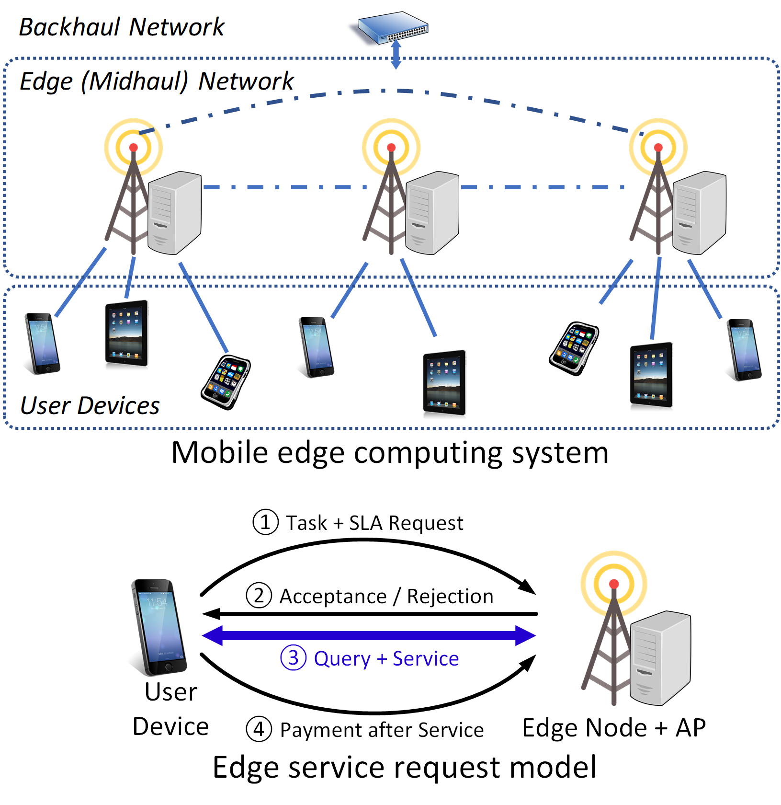
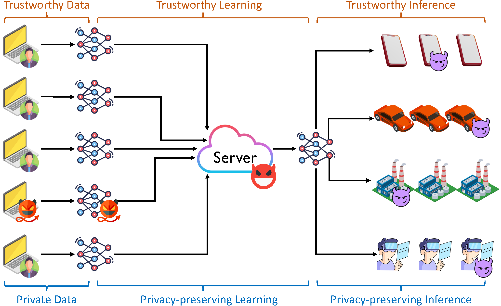
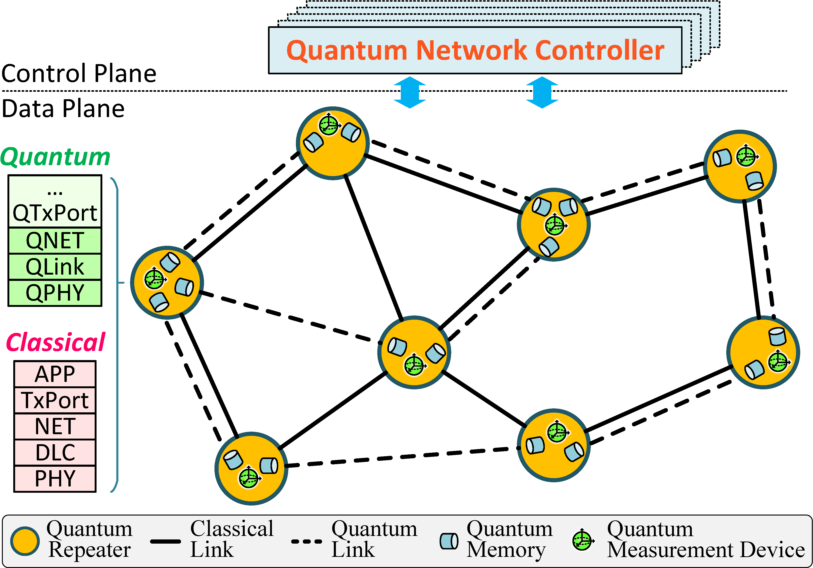

Current Research Projects
|
Application-Network Co-Design for Edge Resource Provisioning
[Project Page]
| |
 |
Modern distributed computing applications have extremely complex structures. Examples include microservice-based applications such as Twitter, Netflix, Uber, and IoT, which can consist of thousands of microservices, loosely coupled through API calls. Such structural complexity poses significant challenges when these applications are looking to leverage edge computing, our next-gen computing paradigm, which provides low-latency and high-throughput computing proximal to end users. This project addresses the performance issue of large-scale distributed applications by employing an application-network co-design approach: simultaneously configuring computing and networking resources for end-to-end performance guarantee. Two developments will result from this project: the WolfPack, a theoretical framework for app-network co-design optimization; and the WolfBench, a systematic benchmark for app-network co-designed applications in realistic edge computing environments.
This project is supported by NSF CAREER Award #2045539. |
|
Robust SLAs for Mobile Edge Computing Applications
[Project Page]
| |
|  |
Mobile edge computing has emerged to address the long latency, low throughput, and unpredictability of cloud computing for serving modern mobile applications. Nevertheless, the lack of end-to-end performance guarantee in the form of service-level agreements (SLAs) can lead to performance degradation of critical applications during unexpected system dynamics, rendering these applications incompetent or unsafe to use. This project seeks to develop mathematical and systematic tools for edge providers to quantify and control, the risk associated with providing end-to-end SLAs for mobile applications. By designing multi-dimensional resource planning and orchestration algorithms that bound or minimize the risk associated with edge SLAs, this project aims to enable and enhance life-changing edge applications such as autonomous driving and mobile vision, promote investment and expedite development in mobile edge computing, and broaden awareness of risk management from a system perspective.
This project is supported by NSF Award #2007391. |
|
Privacy-Preserving and Trustworthy Decentralized Machine Learning
| |
|  | Decentralized machine learning such as federated learning has emerged as a novel learning paradigm that enables privacy-preserving learning in a large scale. Nevertheless, decentralized learning systems face practical challenges that significantly hinder their application in real-world scenarios such as smart health or autonomous driving. This project aims to address trustworthiness and privacy preservation in decentralized learning. To address issues such as Byzantine clients or malicious aggregators, this project not only aims to design improved learning algorithms with improved trustworthiness and privacy, but more fundamentally combine learning with robust system design, data analytics, game theory, social trust, risk theory, and cryptography. The goal is to develop a convergence approach for building a trustworthy decentralized learning ecosystem, with tools and methods to support application of decentralized learning in many real-world applications. |
|
High-Performance Quantum Networking for Next-Generation Quantum Applications
| |
|  | Quantum communications are key to many novel applications that are not possible in the classical world, such as quantum key distribution, quantum sensing, distributed quantum computing, and many more. Recent advances in quantum hardware such as quantum repeaters and quantum memory have demonstrated prototypes of what has the potential of becoming a global quantum internet in the near term. This project aims to advance quantum networking by developing control and data plane protocols for near-term quantum applications, bridging together knowledge in classical networking, quantum information science, distributed systems, and artificial intelligence. |
|
Economics and Privacy of Blockchain Payment Channel Networks
| |
 |
The blockchain technology has enabled the prosperity of a decentralized economy around cryptocurrencies, notably the Bitcoin. Nevertheless, making daily payments through cryptocurrencies is still just a fancy concept due to the unbearably long settlement time, low throughput and high transaction fees of using the blockchain. Payment channel networks (PCNs) such as the Bitcoin Lightning network are off-the-chain networks construsted by local peer-to-peer channels that are cryptographically protected by the blockchain. With only local consensus involved in most transactions, PCNs are promising in achieving instant payment settlement, very high throughput, and low transaction fees. This project studies the economics and privacy of payment channel networks from a networking perspective, with the goal of developing scalable and usable next-gen financial systems with security. |